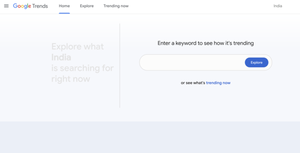
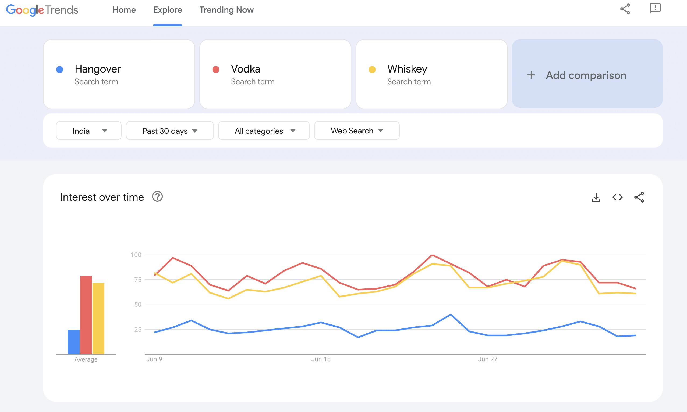
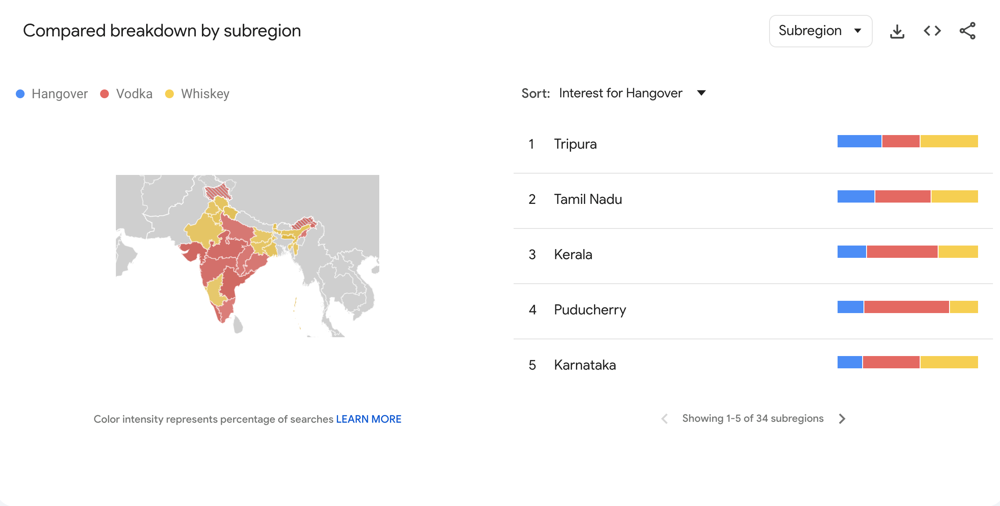
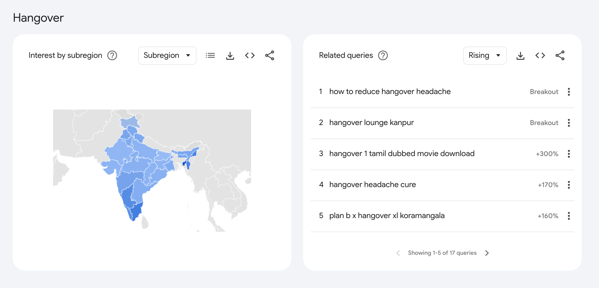
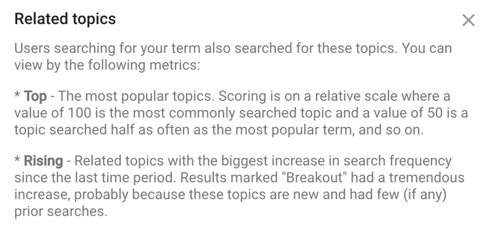
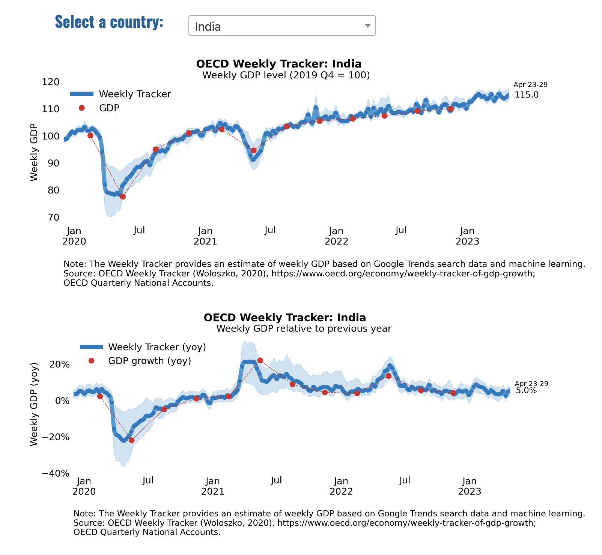

Google Trends#
Google Trends data is a collection of information that represents the relative popularity of search queries entered into Google’s search engine over a specific period of time and across different regions or categories. This data is derived from the vast number of searches conducted on Google and then normalized to account for the total search volume in a given region and time frame.
Point to Note Google Trends does not provide absolute search volumes; instead, it assigns a value between 0 and 100 to indicate the popularity of a search term relative to its peak popularity during the selected time frame. A value of 100 represents the peak popularity, while a value of 0 indicates the term had less than 1% of its peak popularity.
This data can be used to analyze search trends, identify emerging topics, gauge public interest in specific subjects, and compare the popularity of different search terms. Google Trends data is valuable for various applications, including market research, content creation, sentiment analysis, and tracking the impact of events or news stories on public interest.
Here’s a step-by-step guide for using Google Trends, along with examples and story ideas:#
Access Google Trends: Go to Google Trends to access the platform
Google Trends measures keyword popularity rather than keyword search volume.
Here’s how Google explains it: “Each data point is divided by the total searches of the geography and time range it represents, to compare relative popularity.”
To start using Google Trends, enter a keyword into the search bar or choose one of the provided examples.
On which day do most Indians get a hangover? Lets Find out with the help of Google Trends

We can infer from a spike in Google searches related to hangovers, vodka, whiskey, or other alcoholic beverages during weekends that people might be consuming more alcohol on these days. Similarly, an increase in searches for hangover cures or related terms could suggest that more people are experiencing hangovers after these periods of increased alcohol consumption.
Google Trends can be a useful tool for this kind of analysis, as it allows you to track the popularity of certain search terms over time and identify patterns or trends. For example, you could compare the search interest for "hangover cure" on weekends versus weekdays, or see how search interest changes around certain events or holidays.
You can adjust the region and time frame for your term using the dropdown options below the search bar. You can look at worldwide data or narrow it down to a specific country or even a subregion within a country. You can also adjust the time frame from the past hour up to the past 5 years or you can set a custom time range.
Compare Multiple Terms
Google Trends allows you to compare the popularity of up to five search terms or groups. Click on the “+ Compare” button and enter your second search term. The chart will now show data for both terms, allowing you to easily compare them.
Use Categories and Web Search
With the “All categories” dropdown, you can filter your term by categories like Business, Health, Entertainment, etc. With the “Web Search” dropdown, you can filter by types of searches such as Image Search, News Search, Google Shopping, and YouTube Search.

In addition to related queries, you can research related topics.
The topics marked with percentage increases are “Top” trending topics, while breakout terms are “Rising.” Breakout, or rising, topics have seen a huge increase since the last time period.
The goal is to identify any gaps to capitalize on popular terms.
A lot of SEO/Marketing hacks can be picked out from these related terms for running ads in areas/geography/cities or identifying competitor buisness etc.

How can a journalist leverage related queries and related topics ?
It offer insights into what people are interested in or what they’re searching for in relation to a specific topic. This information can help journalists understand the broader context of a story, identify related issues to explore, or even discover new story ideas.
Here’s an example:
Let’s say a journalist is covering the topic of electric vehicles (EVs) in India. They enter “electric vehicles” into Google Trends and set the region to India. Below the interest-over-time graph, they find the sections for Related Topics and Related Queries.
Related Topics might include:
Specific electric vehicle models or brands, like the Tata Nexon EV. Government incentives for electric vehicles. The issue of charging infrastructure for electric vehicles. Each of these related topics could provide ideas for more in-depth stories. For instance, the journalist could write a feature on the Tata Nexon EV, investigate the impact of government incentives on EV adoption, or explore the challenges and solutions around EV charging infrastructure in India.
Related Queries might include:
“Electric vehicle charging stations in India” “Cost of electric vehicles in India” “Best electric vehicle in India” These queries give the journalist insight into what people want to know about electric vehicles. They could address these queries directly in their reporting, answering the public’s questions and providing valuable information to their audience. For example, they might write an article that compares the costs of different electric vehicles in India, or create a map of charging stations across the country.

Can Google Trends predict GDP Growth in real time?
Introducing OECD Weekly Tracker and other innovative measures of economic activity
The OECD Weekly Tracker of GDP growth provides a real-time high-frequency indicator of economic activity using machine learning and Google Trends data. It has a wide country coverage of OECD and G20 countries. The Tracker is thus particularly well suited to assessing activity when it is changing very rapidly due to the impact of a major shock. It applies a machine learning model to a panel of Google Trends data for 46 countries, and aggregates together information about search behaviour related to consumption, labour markets, housing, trade, industrial activity and economic uncertainty.

Nowcasting with Google Trends
Signals about multiple facets of the economy from Google Trends are extracted and aggregated using machine learning in order to infer a timely picture of the macro economy.
In the Indian context they might include Consumer Confidence: This can be gauged by looking at searches related to big-ticket consumer goods (like cars or houses), luxury goods, or even general retail goods. An increase in searches for these items might indicate increased consumer confidence, while a decrease could suggest the opposite. In India, specific terms might include brand names popular in the country, like “Maruti cars” or “Samsung mobile phones”.
Unemployment: Searches for terms like “government job vacancies”, “Sarkari result”, or “how to prepare for interview” can give insights into changes in the unemployment rate. An increase in these types of searches might suggest an increase in unemployment.
Inflation: Searches for price-related terms (like “price of rice” or “petrol price today”) could provide insights into consumer perceptions of inflation. If more people are searching for these terms, it could suggest that prices are rising and inflation is becoming a concern.
Housing Market: Searches for terms like “property prices in Mumbai”, “home loan interest rates”, or “how to buy a flat” can give insights into the state of the housing market, which is a significant factor in the Indian economy.
Retail Sales: Searches for specific retail goods or brands can provide insights into retail sales, which are a key indicator of consumer spending. For example, searches for “online shopping”, “Amazon sale”, or “Flipkart offers” could indicate trends in e-commerce, a fast-growing sector in India.
Business Investment: Searches for business-related terms (like “SME loans” or “coworking spaces in Bangalore”) could provide insights into levels of business investment.
Stock Market: Searches for stock market-related terms (like “Sensex”, “Nifty”, or specific company names) could provide insights into stock market trends and investor confidence.
Trade: Searches for terms related to imports and exports (like “import duties” or “export opportunities”) could provide insights into the state of international trade.
Economic paper on how OCED tracks economy in real time - Go to OCED Google trends